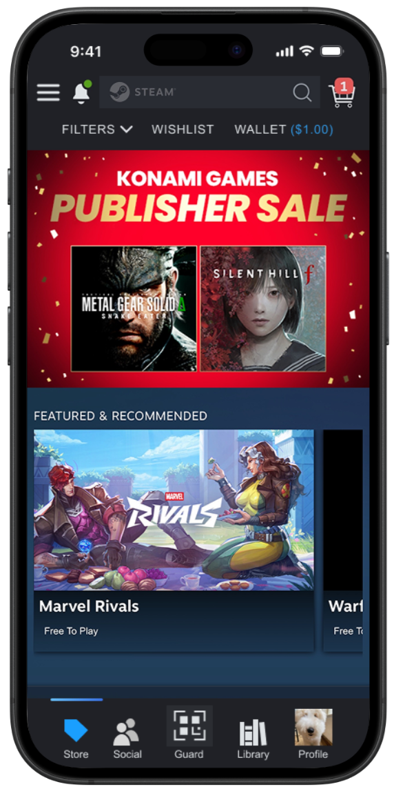
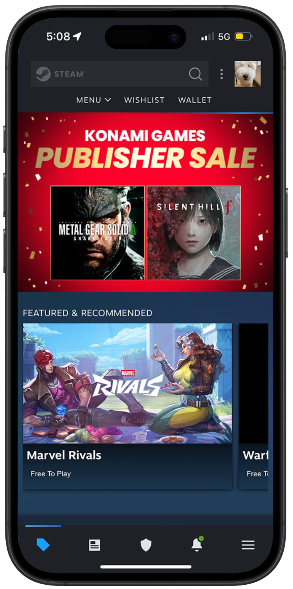
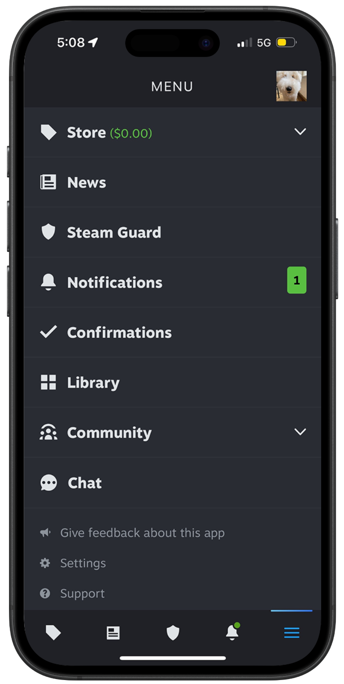
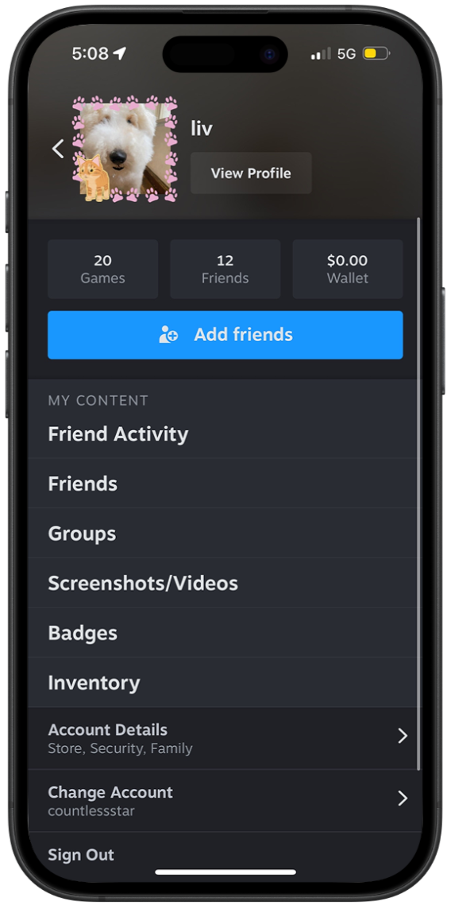
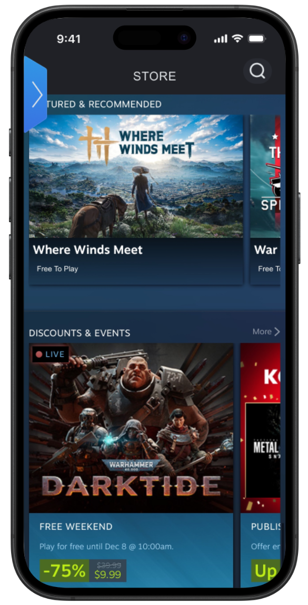
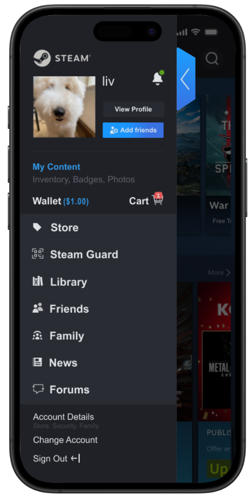
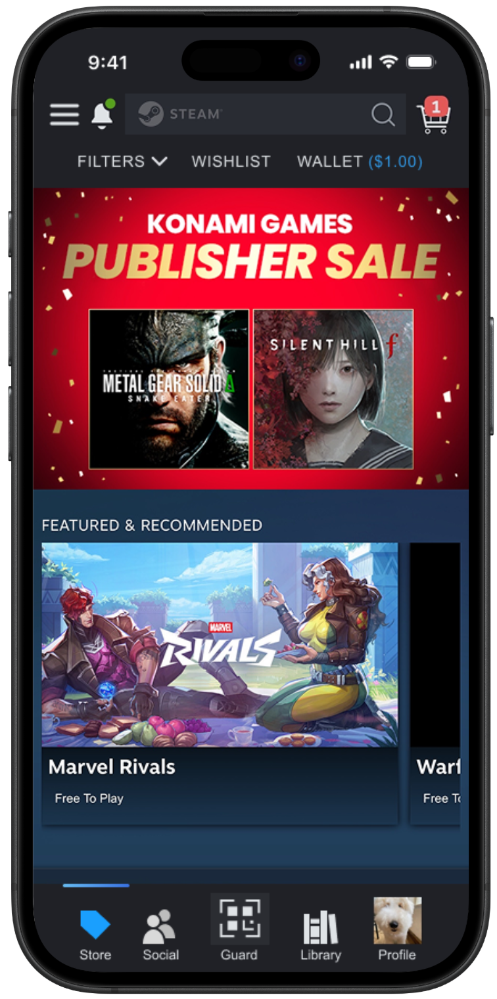
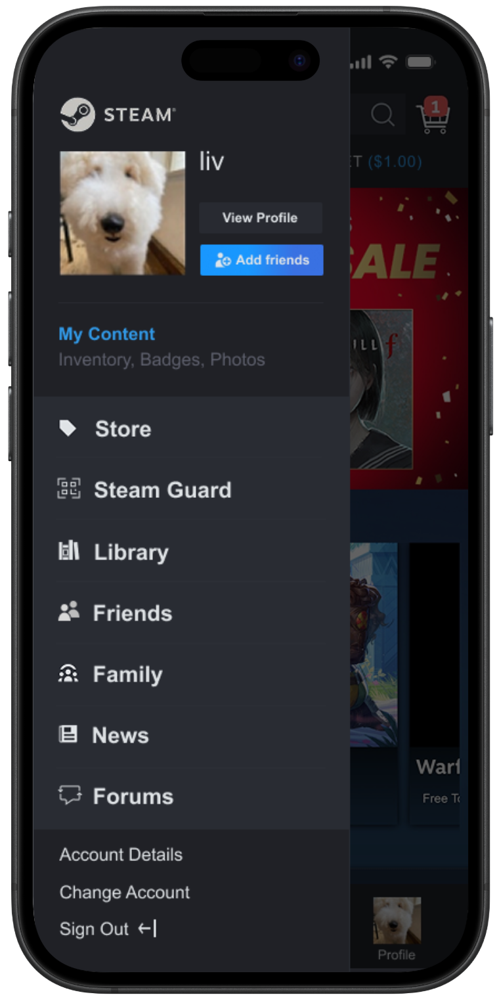

A
The conventional approach
A standard bottom navigation bar prioritizing familiarity and one-tap access to key features.
What it tackles
Low discoverability by placing core actions where mobile users already expect them

Overview
Working with two other designers, I redesigned the Steam mobile app to address confusing navigation caused by its desktop-first information architecture. Building upon the existing interface with a familiar bottom navigation bar for everyday actions made frequently used features easier to access.
The redesign reduced average task completion time by 3.21 seconds, helping users find their friends and games more efficiently.
Problem Statement
The Steam mobile app suffers from a significant disconnect between its information architecture and standard mobile user expectations. It struggles to balance being a storefront, a social platform, and a news hub, resulting in a "guessing game" for users. High-value features are often buried under vague labels like "Community," leading to low discoverability and high cognitive load.
Where the disconnect shows up
Desktop-first structure
The information architecture doesn't match what people expect on mobile
Vague labels
High-value features sit under names like "Community"
Three jobs in one app
A storefront, a social platform, and a news hub compete for space
Research and Pain Points
Usability testing with 4 participants revealed recurring navigation issues that prevented users from moving through the app confidently. Participants frequently relied on guesswork rather than in-app affordances.
3 out of 4 participants searched the hamburger menu for Friends, while 2 out of 4 expected Family Management to be located there.
Users' mental models didn't match Steam's information architecture, which caused repeated navigation errors and interrupted task flow.
2 out of 4 participants followed the Community tab expecting it to lead directly to Friends or Family Management.
Category labels failed to communicate where they led, creating misleading paths that increased friction and task times.
Search filters were embedded inside the search field rather than alongside it, forcing unexpected interaction patterns.
Participants struggled to locate basic filtering, and unclear feedback left them unsure whether pressing "Apply" was required.
New users described the primary screens as overwhelming due to dense, unorganized information displays and split menus.
Missing visual cues, unclear affordances, and inconsistent element placement made the interface hard to interpret and scan.
Original navigation layout
Original menus



Users defaulted to searching top navigation bars and hamburger icons to find core social features, ignoring the obscure icon shortcuts
Splitting features across two separate menus caused visual clutter and confusion over where settings lived
The Strategy
The research pointed to two overlapping problems: core features were hard to find, and menus were scattered across the app. Two distinct prototypes were developed to test which model resonated most with users, one that relies on familiar mobile patterns and one that consolidates features into a single place.
A
A standard bottom navigation bar prioritizing familiarity and one-tap access to key features.
What it tackles
Low discoverability by placing core actions where mobile users already expect them

B
A centralized hub designed to reduce information scattering and consolidate features into a single entry point.
What it tackles
Split menus and high cognitive load by grouping related tools in one structured place


The Solution
The A/B testing revealed a clear trade-off. Prototype A performed well at high-frequency tasks, with users completing Store and Library actions in roughly 6-10 seconds. Prototype B proved better at addressing hidden functionality by organizing complex tools into a more structured, centralized dashboard.
In interviews, users consistently preferred Prototype A for its simplicity and familiarity, while appreciating Prototype B's clearer information hierarchy and more intentional grouping of features. Ultimately, I chose to combine the strongest elements of both layouts.
Moved Library, Friends, and Store into persistent bottom navigation to reduce friction and match familiar mobile patterns.
Grouped account-based tools like Steam Families and Settings into a profile hub for clearer organization.
Replaced vague labels like "Community" with specific categories like "Forums" to improve discoverability.


Lessons Learned
This project really put into perspective how important it is to distinguish between mobile and desktop experiences; you can't simply move desktop features into a mobile layout and expect a smooth user journey. Working with my teammates showed me that even the smallest details, like renaming an ambiguous "Community" tag to "Forums," can help users more than I realized.
I saw firsthand that when these details are overlooked, it can easily snowball into a "guessing game" for tasks that should be simple. It taught me that even if an issue may seem minuscule at first glance, it's still important to account for it, because those "small" issues are the exact moments where people decide to give up.
Interactive Prototype